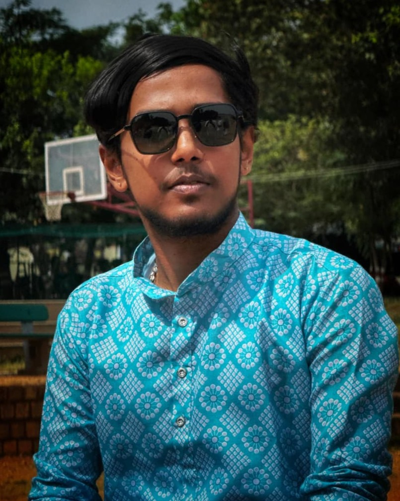
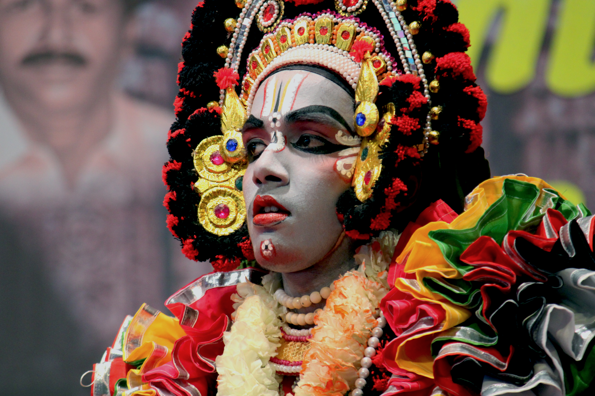
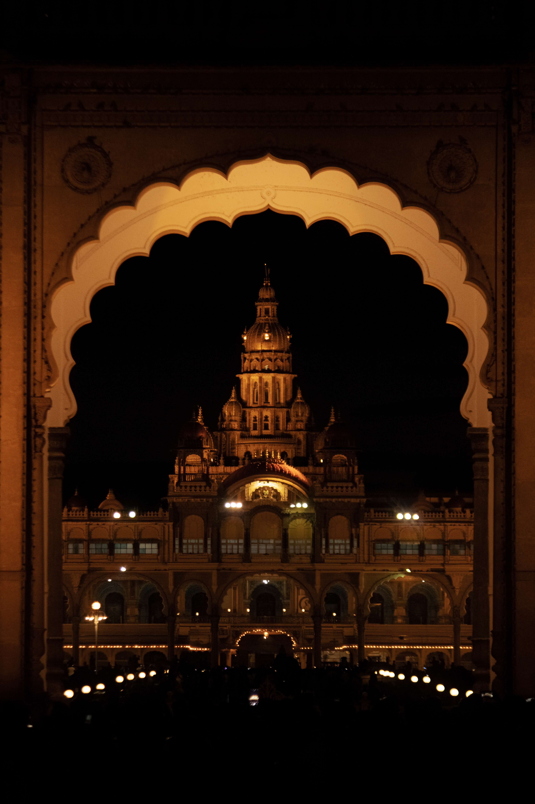

BE Electronics and Communication Engineering student with a passion for IoT and Embedded Systems. I love turning ideas into real, working things — and that curiosity doesn't stop at technology. I'm a Yakshagana artist and a hobbyist photographer, which means I'm equally at home on a stage as I am behind a soldering iron. I'm someone who finds meaning in both building and creating, and I'm always looking for the next thing to learn or make.
I have done my 10th from Kumaraswamy Vidyalaya, Subrahmanya. I happy to share that I have scored 601/625 in my finals. Also, I have been the student representative for the academic year of 2022-23.
I have completed my 11th & 12th in Kumaraswamy PU College, Subrahmanya with 558/600.
I am doing my BE Electronics and Communication in The National Institute of Engineering, Mysuru. Currently I am in 2nd sem. I am a member of The Robotics Club, a student driven club at NIE.
Built a low-power FM transmitter capable of broadcasting audio wirelessly over the FM band. The circuit uses an electret microphone to capture audio, which is amplified and frequency-modulated using two BC547 transistors. A hand-wound inductor coil paired with a variable tuning capacitor sets the transmission frequency, with a 165cm antenna for range. Powered by a compact 3V supply, this project gave me hands-on experience with analog RF design, oscillator circuits, and wireless communication fundamentals.
An ESP32-based safety add-on for household irons that automatically cuts power when left unattended or too close to an object — using an MPU6050 accelerometer and HC-SR04 ultrasonic sensor. Non-invasive, built under ₹1,300, with a response time under 500ms.

I have a passion for Yakshagana, a traditional form of theater from Karnataka.

I am a hobbyist photographer, capturing moments and scenes that inspire me.